Utilería: lo que eligió el dueño (13 nov, 20:04)
B en todas las escenas, sin marquesina, sin cuernos, la barra de luces real, la fresa nueva y el MT dorado en el cofre. Cada
imagen abre el still completo (1920×1080, 64 muestras, de noche). Los números salen de una sonda por rayos desde la cámara de cada
escena (scripts/props-medir.py); el look se juzga en los stills. Reglas: reglas.md; props:
props.md; fotos: referencias.md.
Las cuatro escenas con lo elegido (B)
B en todas las escenas, sin marquesina, sin cuernos; en el camión las lámparas reales del alerón y el MT dorado en el cofre. La luz bajo la carrocería sigue ámbar. Montón de la caja: caja3 A (#34 sigue abierta). Escena 4 con la luz de relleno (sigue abierta).

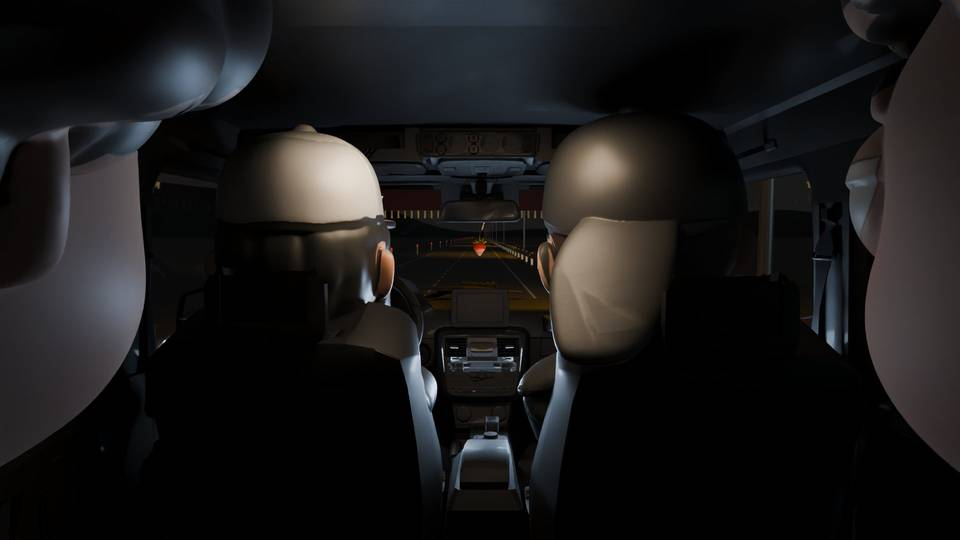
- Regla 1 · zona tapada
- 2.17 % · FAIL
- Reglas 2-3 · props que se leen
- 1 (P3) · PASS
- Regla 4 · luz total: zona vs prop con luz
- 22.2 vs nan · n/a

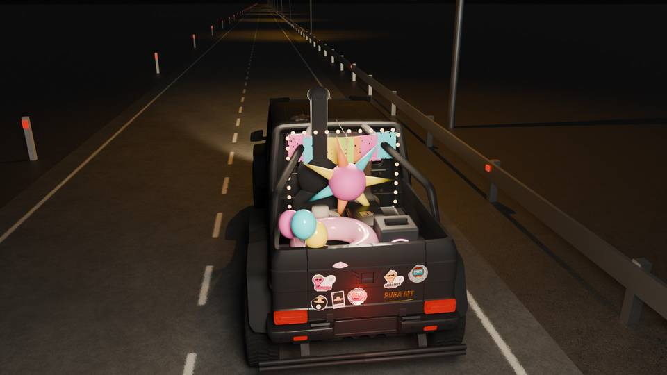
- Regla 1 · zona tapada
- 0.0 % · PASS
- Reglas 2-3 · props que se leen
- 1 (P9) · PASS
- Regla 4 · luz total: zona vs prop con luz
- 223.9 vs 54.0 · PASS

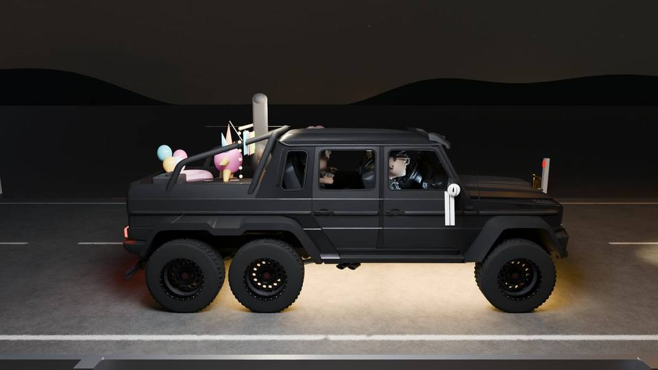
- Regla 1 · zona tapada
- 0.0 % · PASS
- Reglas 2-3 · props que se leen
- 3 (P1,P7,P9) · PASS
- Regla 4 · luz total: zona vs prop con luz
- 57.5 vs 23.1 · PASS

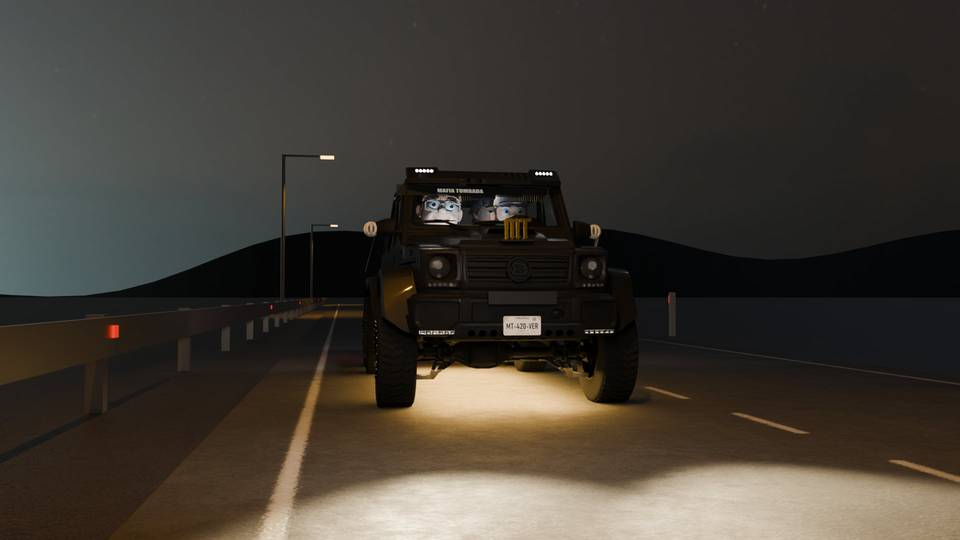
- Regla 1 · zona tapada
- 0.0 % · PASS
- Reglas 2-3 · props que se leen
- 3 (P1,P15,P2) · PASS
- Regla 4 · luz total: zona vs prop con luz
- 45.4 vs 10.4 · PASS
Barra de luces: la pieza real
El G 63 AMG 6×6 de fábrica lleva una lámpara LED en cada esquina del alerón del techo: mica clara sobre caja negra con cinco copas redondas (fotos 12b y 12c en referencias.md). El modelo del camión ya tiene esas dos cavidades, apagadas; aquí se llenan y se encienden en blanco, con su haz hacia el camino. Al lado, la otra lectura: la barra de dos pisos del Brabus XLP 800 6×6 (foto 12), que es una pieza del G nuevo (W465), no de este camión.

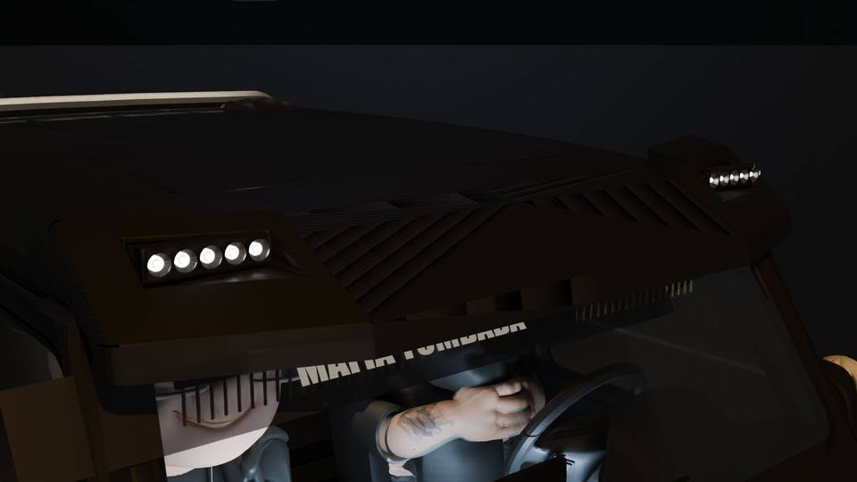

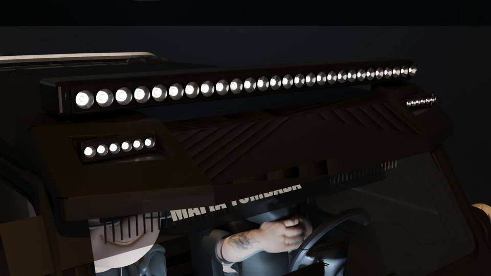

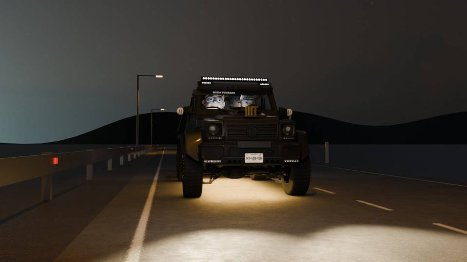
- Regla 1 · zona tapada
- 0.0 % · PASS
- Reglas 2-3 · props que se leen
- 3 (P1,P15,P2) · PASS
- Regla 4 · luz total: zona vs prop con luz
- 45.4 vs 58.9 · FAIL
Emblema MT dorado en el cofre
Letra gótica Pirata One (licencia OFL, libre; elegida por el dueño el 14 nov), de pie con letras de 21.5 cm de alto, extruida y biselada, en el oro de la marca (DESIGN.md, oklch 78 % 0.15 85) como metal pulido. En vez de los cuernos. A 21.5 cm ocupa 0.100 % del cuadro en la escena 6, justo en la línea de 0.1 % de la regla 2 (a 14 y 18 cm, Pirata One no la alcanza). Costo: desde la cabina (escena 1) el emblema cubre 2.17 % del camino, 5 px sobre el 2 % de la regla 1; el dueño aceptó esa excepción: «A, go with 21.5 cm».


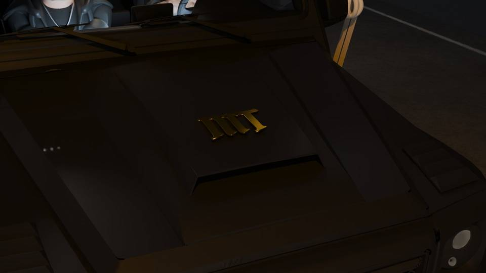
La fresa del espejo
La fresa del modelo del amigo con semillas doradas en 3D (variante B de la pasada 2, elegida por el dueño el 14 nov): su malla y sus texturas, intactas, y el cuerpo escalado a 4.1 cm. Un solo archivo intercambiable: blender/props/strawberry-s2-oro.glb (Z arriba, metros, origen en el tallo); el script lo escala con PP_FRESA_ALTO (0.0647 para este modelo).

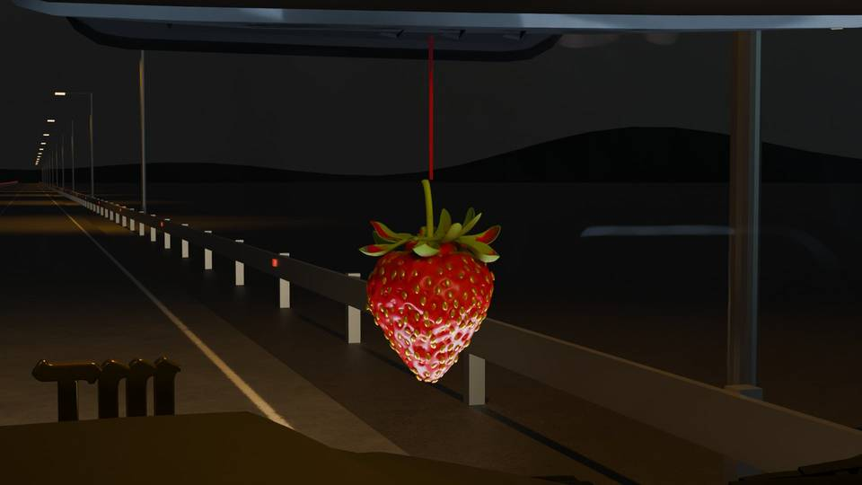
Emblema MT: tamaño y letra (pasada 2)
Seis tomas de la misma cámara 3/4 sobre el cofre (tres tamaños por dos letras, misma altura de mayúscula en las dos letras) y, debajo, lo que hace cada una en la cámara baja de la escena 6. La M de Grenze Gotisch se parece a una «m» minúscula; la de Pirata One es una mayúscula clara, pero más angosta. Ahí solo 18 cm en Grenze supera la línea de 0.1 % de la regla 2 (0.151 %; Pirata One a 18 cm queda en 0.087 %); el plano es un filo de 0.01 %. El dueño eligió Pirata One y se subió a 21.5 cm (0.100 %); esa hoja es de antes del cambio.

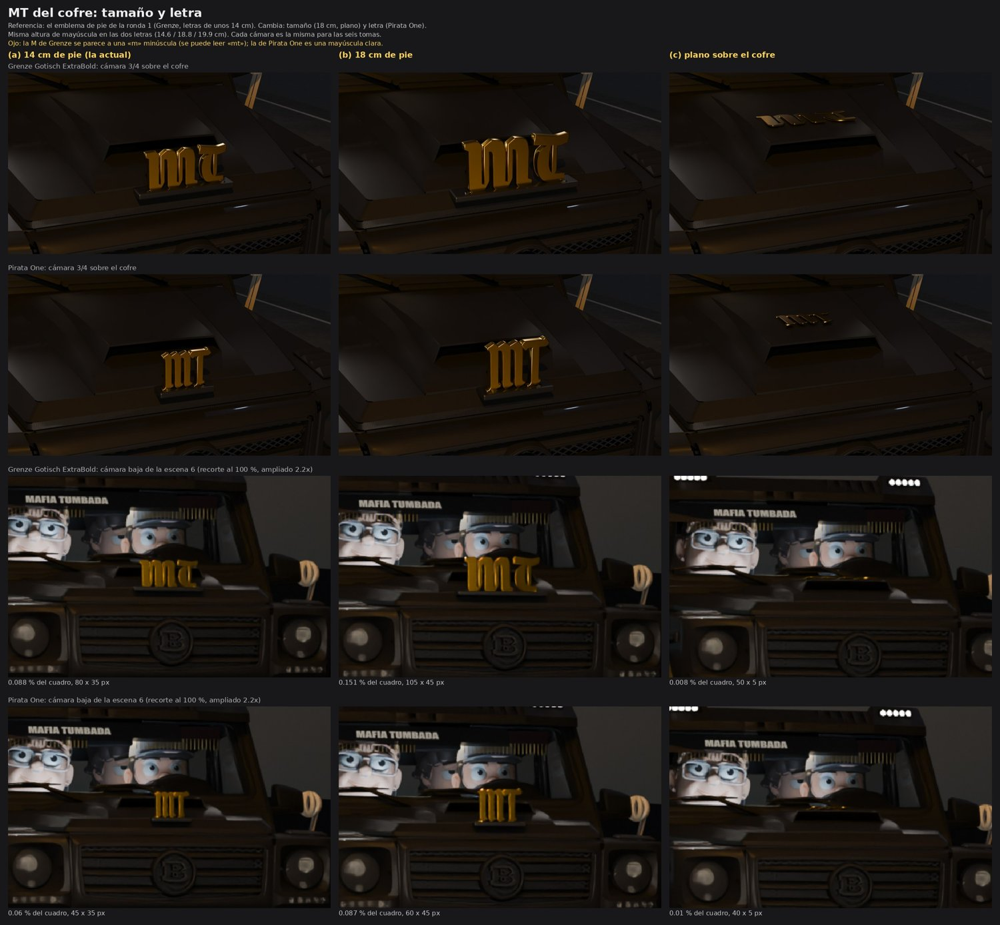
La fresa del amigo con semillas 3D (pasada 2)
Se escala la fresa para que el cuerpo mida 4.1 cm (antes 2.6 cm) y se prueban semillas más grandes, doradas y a tres alturas sobre el hoyuelo. Se queda B (oro satinado, el doble de tamaño, un tercio enterradas, 278 semillas). En la cámara real de la escena 1 la fresa mide unos 38 × 46 px: ninguna variante se lee como semillas separadas (de 5 a 9 manchas separadas de 3 px o más, hacen falta 25), se lee como un punteado dorado; de cerca todas se leen. La luz de la cabina sigue lavando la mitad de abajo.

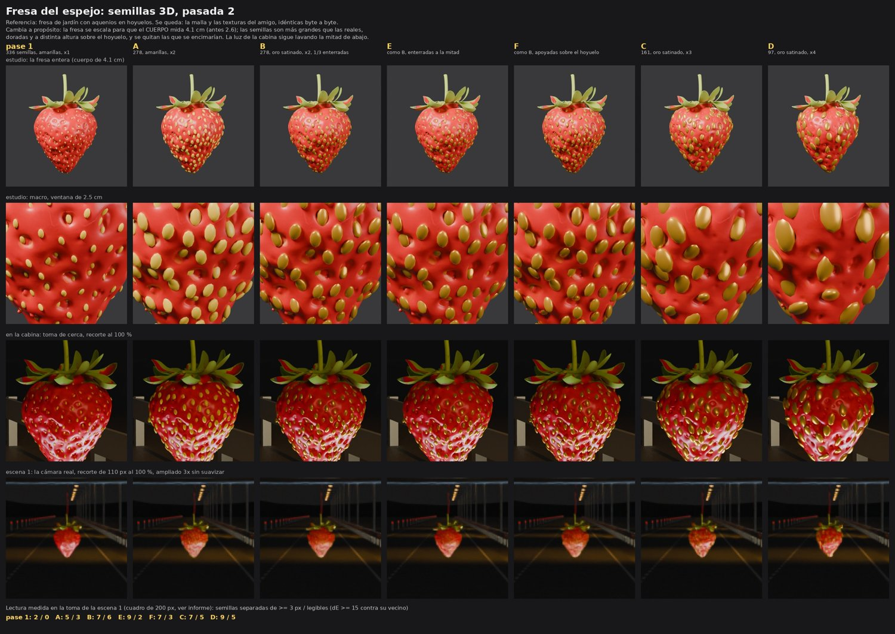
Resuelto el 14 nov y lo que sigue abierto
El dueño eligió la fresa B (la del amigo con semillas doradas) y la letra Pirata One para el emblema; el tamaño lo eligió después: «A, go with 21.5 cm» (de pie, letras de 21.5 cm): pasa la regla 2 en la escena 6 (0.100 %) y falla por 5 px la regla 1 en la escena 1 (2.17 % del camino contra 2 %), una excepción aceptada por el dueño.
Ya resuelta (13 nov): la barra de luces son las lámparas de fábrica del 6×6, no la de dos pisos estilo Brabus.
Siguen abiertas, sin decidir aquí: #33 (escena 3, espejo o puerta trasera), #34 (acomodo de la caja) y la luz de la escena 4.